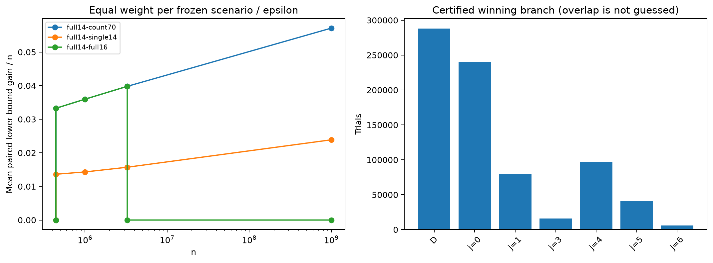
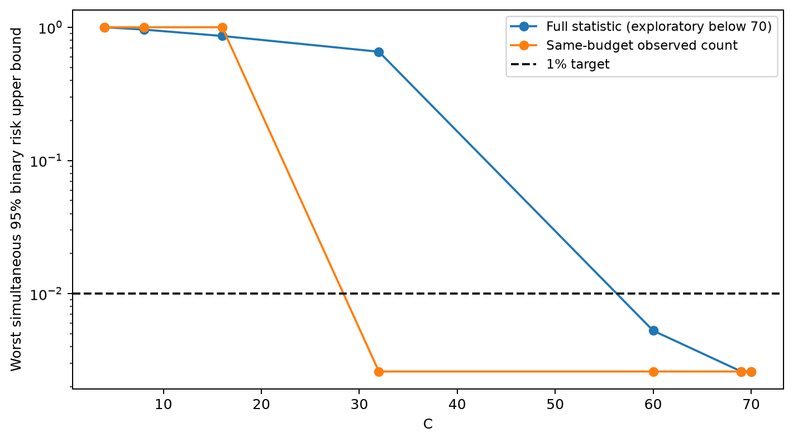
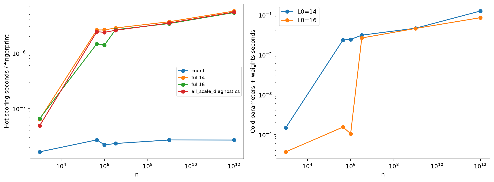

本报告对应独立目录 results_followup_20261102。设计参考此前研究，使用新种子；不是外部预注册。历史冻结实验保持不变。报告只陈述实际运行结果，不将缩预算探索解释为新的统一概率定理。
| 实验 | 设计 | 回答的问题 |
|---|---|---|
| 机制与消融 | n=[442413, 442414, 1000000, 3269017, 3269018, 1000000000]；ε=['.001', '.01', '.1', '.25']；每格 4000 次 | 同一批样本上比较 full14/full16、单尺度、计数与去掉计数分支 |
| 共同分布预算网格 | C=['4', '8', '16', '32', '60', '69', '70']；每格 4000 次 | 共同总体上检验小预算风险；与 Arb 认证的 1% 及 0.09% 计数预算比较 |
| 历史整数细化 | 所有 37,071 个历史区间输出；独立新增文件 | 整数唯一性与高精度成本；不是新增随机试次 |
| 完整接口与计时 | 逐类别泊松、真实 iid 标签、交错计时、正系数闭式核验 | 从采样到频数和唯一整数输出；区分编译、计数与评分成本 |
Yes 为 S≤n；No 为 Δₙ≥ε；Gap 只评估支持下界覆盖。方法复用样本时不重复计为独立路径。计数只给出保守下界，单尺度及去掉 D 的版本是消融，不继承完整统计量的双侧保证。不同预算采用独立子流；C=70 的两种 L₀ 共享同一频数。
| 方法 | 承诺二元试次 | 二元错误 | 覆盖错误 | 最坏二元同时 95% 上界 |
|---|---|---|---|---|
| count70 | 672,000 | 0 | 0 | 0.2454% |
| full14 | 672,000 | 0 | 0 | 0.2454% |
| full16 | 672,000 | 0 | 0 | 0.2454% |
| no_count14 | 560,000 | 0 | 0 | 0.2454% |
| single14 | 672,000 | 0 | 0 | 0.2454% |
| 配对比较 | 配置数 | 正样本均值配置 | 正期望增益可认证配置 | 最大平均增益 / n |
|---|---|---|---|---|
| full14-count70 | 192 | 60 | 36 | 0.319391 |
| full14-full16 | 192 | 36 | 20 | 0.259407 |
| full14-no_count14 | 160 | 20 | 0 | 0.000976 |
| full14-single14 | 192 | 60 | 36 | 0.122412 |
期望增益界使用嵌套最大值产生的 [0,1] 归一化配对增量，Hoeffding 加 Bonferroni 同时校正所有机制比较。先保留数值区间，再计算统计区间；没有把区间中点当作精确输出。未显著不等于没有收益。该置信声明族与风险声明族分别控制 95%。

主网格的 no_count 消融没有覆盖失效。观察到这一结果后，另冻结 ε=1/(4n) 的边界诊断；这是事后提出的新机制实验，使用独立新种子与单独协议，不混入主网格置信声明。两个 n、两种总体各 2,000 次，共新增 8,000 条路径、24,000 次方法评估。
采用均匀分布及最稀有类别质量为 2ε 的分布，均有 effε=S=n。完整算法和计数仍满足覆盖；去掉 D 时，保守修正使输出低于 n，四个单元均出现 100% 的覆盖失效。这是数值下界失效，二元 Yes 判断仍正确。巨大泊松均值通过分组频数模拟，不代表获取了同等数量的现场观测。
| n | 总体 | 去掉 D 后平均整数下界 | 真实要求 effε | 覆盖失败 | 覆盖失败率单独同时 95% 下界 |
|---|---|---|---|---|---|
| 442414 | uniform | 441983.0 | 442414 | 2000/2000 | 99.726% |
| 442414 | rare_mass_2epsilon | 441983.0 | 442414 | 2000/2000 | 99.726% |
| 3269018 | uniform | 3265828.0 | 3269018 | 2000/2000 | 99.726% |
| 3269018 | rare_mass_2epsilon | 3265828.0 | 3269018 | 2000/2000 | 99.726% |
在当前网格上，认证 C=70 的期望预算为 1% 强计数预算的 3.222—8.226 倍。计数预算通过泊松尾界的 Arb 认证；另提供 0.09% 计数预算，便于与 (70,14) 的已证风险上界直接比较。没有为了制造优势削弱计数基线。
将计数也设为同一 0.09% 风险上界时，C=70 的预算仍为计数预算的 3.222—8.028 倍。两种计数比较均以期望泊松样本量衡量，不是 CPU 加速比。
理论风险保证与模拟置信上界分开解读：一个具有≤1%数学保证的基线，有限重复的置信上界仍可能高于1%，这不构成理论反例。缩预算多项式的额外拒绝可能包含误报；risk_summary.csv 分开记录 No 情况的额外正确拒绝和 Yes 情况的额外错误拒绝。
| 方法 | 最坏观测二元错误率 | 最坏二元同时 95% 上界 | 保证状态 |
|---|---|---|---|
| C16 | 83.750% | 86.011% | 消融／探索；仅限网格证据 |
| C16_count | 100.000% | 100.000% | 消融／探索；仅限网格证据 |
| C32 | 62.475% | 65.526% | 消融／探索；仅限网格证据 |
| C32_count | 0.000% | 0.261% | 消融／探索；仅限网格证据 |
| C4 | 100.000% | 100.000% | 消融／探索；仅限网格证据 |
| C4_count | 100.000% | 100.000% | 消融／探索；仅限网格证据 |
| C60 | 0.125% | 0.528% | 消融／探索；仅限网格证据 |
| C60_count | 0.000% | 0.261% | 消融／探索；仅限网格证据 |
| C69 | 0.000% | 0.261% | 消融／探索；仅限网格证据 |
| C69_count | 0.000% | 0.261% | 消融／探索；仅限网格证据 |
| C70 | 0.000% | 0.261% | 统一理论保证 |
| C70_count | 0.000% | 0.261% | 消融／探索；仅限网格证据 |
| C8 | 94.750% | 96.056% | 消融／探索；仅限网格证据 |
| C8_count | 100.000% | 100.000% | 消融／探索；仅限网格证据 |
| count_risk_.0009 | 0.075% | 0.434% | 统一理论保证 |
| count_risk_.01 | 0.600% | 1.254% | 统一理论保证 |
下表的“首个通过”要求同一 n、ε 下所有承诺分布的同时置信上界均≤1%。全部候选预算已纳入多重比较；没有假设多项式风险随 C 单调。它是有限共同分布集上的通过点，不是分布无关的样本复杂度定理。固定困难总体由参考 C=60 定义一次，之后各方法面对完全相同的精确概率。
| n | ε | 方法族 | 首个通过 C | 期望预算 | 右删失 |
|---|---|---|---|---|---|
| 1000 | 1/10 | full | 16 | 20233.30191125929 | False |
| 1000 | 1/10 | count_same_budget | 16 | 20233.30191125929 | False |
| 1000 | 1/100 | full | 16 | 202333.01911259288 | False |
| 1000 | 1/100 | count_same_budget | 16 | 202333.01911259288 | False |
| 1000 | 1/1000 | full | 16 | 2023330.191125929 | False |
| 1000 | 1/1000 | count_same_budget | 16 | 2023330.191125929 | False |
| 1000000 | 1/10 | full | 60 | 40498098.10148338 | False |
| 1000000 | 1/10 | count_same_budget | 16 | 10799492.827062236 | False |
| 1000000 | 1/100 | full | 60 | 404980981.01483387 | False |
| 1000000 | 1/100 | count_same_budget | 16 | 107994928.27062236 | False |
| 1000000 | 1/1000 | full | 60 | 4049809810.1483383 | False |
| 1000000 | 1/1000 | count_same_budget | 16 | 1079949282.7062235 | False |
| 1000000000 | 1/10 | full | 60 | 27620156402.981285 | False |
| 1000000000 | 1/10 | count_same_budget | 32 | 14730750081.590017 | False |
| 1000000000 | 1/100 | full | 60 | 276201564029.81287 | False |
| 1000000000 | 1/100 | count_same_budget | 32 | 147307500815.90018 | False |
| 1000000000 | 1/1000 | full | 60 | 2762015640298.1284 | False |
| 1000000000 | 1/1000 | count_same_budget | 32 | 1473075008159.0017 | False |

图中每个点对应一个实际测试的 C，连线仅辅助阅读，不表示未测预算上的插值保证；纵轴取共同网格中最坏的单元置信上界。
| 指标 | 结果 |
|---|---|
| 历史区间输出细化 | 37,071 / 37,071 |
| 改变二元判定／覆盖事件 | 0 / 0 |
| 细化评分总时间 | 175.325 秒（不含原文件加载） |
| 每次细化中位／95% 分位时间 | 4.4384 / 6.3314 毫秒 |
| 最大使用精度 | 512 bits |
| 独立闭式系数核验 | 2574 |
| 完整接口核验次数 | 10 |
闭式核验采用 Tₖ(1+z) 的正系数展开，独立于生产代码的 Chebyshev 递推。完整接口显式要求预定泊松均值，分别记录实际 M；真实标签场景激活了多项式分支。所有整数必须唯一认证，未用中点替代。样本生成器仍是 NumPy/SciPy 双精度伪随机实现，Arb 评分认证不等于端到端精确采样认证。
| 输入路径 | n | 实际 M | D | 输出 | 整数下界 | 评分秒 |
|---|---|---|---|---|---|---|
| explicit_category_poisson | 442414 | 22127970 | 442414 | Yes | 442414 | 0.00036 |
| explicit_category_poisson | 442414 | 22118159 | 442414 | Yes | 442414 | 0.00036 |
| explicit_category_poisson | 442414 | 22127668 | 174046 | Yes | 275914 | 0.00025 |
| explicit_category_poisson | 442414 | 22120641 | 173753 | Yes | 275708 | 0.00027 |
| explicit_category_poisson | 1000000 | 47250033 | 1000000 | Yes | 1000000 | 0.00038 |
| explicit_category_poisson | 1000000 | 47250039 | 1000000 | Yes | 1000000 | 0.00046 |
| explicit_category_poisson | 1000000 | 47241544 | 377389 | Yes | 623036 | 0.00026 |
| explicit_category_poisson | 1000000 | 47249023 | 376452 | Yes | 621001 | 0.00024 |
| actual_iid_labels | 442414 | 22118485 | 442414 | Yes | 442414 | 0.00045 |
| actual_iid_labels | 442414 | 22118457 | 442414 | Yes | 442414 | 0.00037 |
冷编译和热评分分别测量；冷编译每配置单次，是开销示例。热评分每配置7轮、方法顺序每轮随机打散，固定 BLAS/OMP 单线程；内存追踪在计时之外执行。tracemalloc 峰值是可追踪分配，不是完整进程 RSS。模拟生成、真实标签计数和物理采样成本不混合。分组模拟的时间不能作为采集上亿观测的时间。
热评分使用同一 full14 频数矩阵。完整算法计时包含输入校验；count 一列只从已知 D 生成整数下界，不重新扫描低频矩阵。full16 的计数分支仍承担共享矩阵的接口校验成本。这是当前接口的局部开销实测，不代表各方法独立优化后的端到端运行时排名。

这组实验补充最新算法的机制、共同网格功效、强计数对照和完整数值接口证据。原论文的渐近最优性、ε 适用范围与新常数充分性仍依赖数学证明。有限网格里 C<70 通过或 C=69 不失败，不反驳全参数渐近必要界。去掉 D 的消融失效只解释组合结构，不是原算法失败。
没有新增现场调查，因此不支持未知生态总体的支持真值；没有将类别复制当作新自然数据。旧 practical hybrid 的节省样本结论仍独立归属其算法。没有加入非忠实 FH/BGY 实现来制造实测排名。所有零错误同时报告置信上界，没有把多方法评估总量当作单一分布的重复数。
完整复现命令 · 机器可读摘要 · 冻结协议与源码哈希 · 审计结果 · 全部方法结果 · 配对增益区间 · 经验通过预算 · 历史整数细化 · 文件清单
原始频数、全部方法事件、尺度区间和数值细化输出保存在 raw/；精确总体与每格哈希保存在 cells/；执行源码在 source_snapshot/。小规模 smoke 结果不计入正式试验。